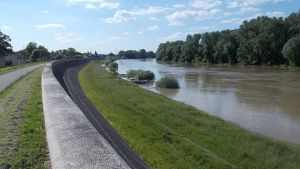
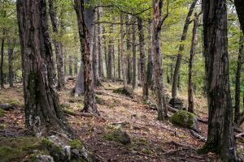
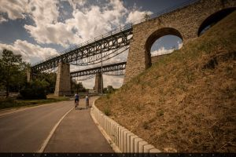
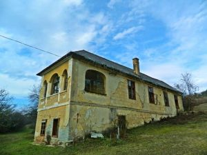

Csodás tájkép
Tükröződő fák egy kis tó partján a Duna mentén
Tiszai gát

Poroszló menti Tisza töltés viharos időben
Börzsöny
Kilátás a szemközti hegyoldalra
Pléska-szikla felé

Úton a Pléska-szikla felé az őszi erdőben
22000 Ft
Viadukt

Biatorbágyi viadukt
2300 Ft
Régi présház

Elhagyatott présház
3000 Ft
Nyakas-kő
Innen ugratta Ördög nevű lovát a mélybe
Sándor Móricz gróf.